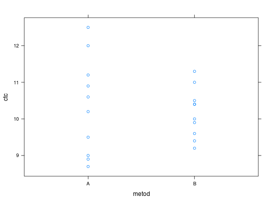

Dois métodos de CTC do solo são usados em uma amostra de controle e fornecem os resultados em cmol kg\(^{-1}\).
Um data.frame com 20 observações e 3 variáveis, em que
metodctcFARIA (2009), Exemplo 2.9.5, pág 39.
library(lattice) data(FariaEg2.9.5)#> Warning: data set ‘FariaEg2.9.5’ not foundstr(FariaEg2.9.5)#> 'data.frame': 20 obs. of 2 variables: #> $ metod: Factor w/ 2 levels "A","B": 1 1 1 1 1 1 1 1 1 1 ... #> $ ctc : num 10.2 8.7 9.5 12 9 11.2 12.5 10.9 8.9 10.6 ...aggregate(ctc ~ metod, data = FariaEg2.9.5, FUN = function(x) { c(media = mean(x), variancia = var(x)) })#> metod ctc.media ctc.variancia #> 1 A 10.3500000 1.7583333 #> 2 B 10.1700000 0.4601111xyplot(ctc ~ metod, data = FariaEg2.9.5)